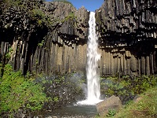
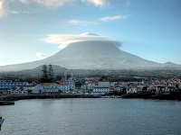

-
Description
Albania officially known as the Republic of Albania and is a country in Southeastern Europe. It is bordered by Montenegro to the northwest, Kosovo to the northeast, the Republic of Macedonia to the east, and Greece to the south and southeast. It has a coast on the Adriatic Sea to the west and on the Ionian Sea to the southwest. It is less than 72 km (45 mi) from Italy, across the Strait of Otranto which links the Adriatic Sea to the Ionian Sea.
Best places to go:
- Berat The city of Berat is located at the river Osum in the middle of the country. In the past it was built as a castle and it is erected at a hill.
- Albanian Riviera In the southwest of the country there is a steep coastline, which can be compared to the Italian Riviera but is much quieter and less crowded.
- Apollonia Next to the city of Fier in the middle of Albania one can find the ruins of an ancient town, named after the god Apollon. Apollonia was the biggest and most important city in the ancient world.
- Durres The big city Durres at the coastline of Albania is the most important harbor city in the country. Not only from economic viewpoint but also culturally it is a capital.
- Gjirokastra The city in the south of Albania was elected UNESCO world cultural heritage. Reason for this is the unique architectural style, most of the buildings show. The style is called Balkan architecture and contains small castle-like houses made of stone
- Kruja Kruja is an Albanian town some 20 kilometers northeast of the capital. It is located at the side of the Skanderberg-mountains.
- Tirana Tirana is the capital city of Albania and forms the economic and political epicenter of the country. Many important facilities are located in Tirana for example the parliament and the government.
- Shkodra Shkodra is a city in the north of Albania and the fifth largest city of the country. It is located at the lake Skutari at the boarder to Montenegro
-
Description
Andorra officially the Principality of Andorra, also called the Principality of the Valleys of Andorra, is a sovereign landlocked microstate in Southwestern Europe, located in the eastern Pyrenees mountains and bordered by Spain and France. Created under a charter in A.D. 988, the present Principality was formed in A.D. 1278. It is known as a principality as it is a monarchy headed by two Co-Princes – the Spanish/Roman Catholic Bishop of Urgell and the President of France.
Best places to go:
- Andorra la Vella The capital of Andorra, Andorra la Vella, is this small nation's busiest tourist attraction. At an altitude of 1,029 meters, it's one of the world's highest capital cities and it's also one of the smallest with a population of less than 25,000 people.
- Vallnord In the northern part of Andorra, Vallnord is really three unique ski resorts in one - Arcalis, Pal, and Arinsal - providing a vast amount of terrain to explore.
- Sant Joan de Caselles Church A little way north of the little village of Canillo is the chapel of Sant Joan de Caselles. This splendid old stone building dates from the 11th century and contains many interesting features.
- Centre Termolúdic Caldea In the heart of Andorra la Vella, the huge Centre Termolúdic Caldea, Europe's largest spa complex, dominates the capital's skyline with its magnificent glass pyramid tower.
- Ordino and Casa Plairal d'Areny de Plandolit The chief destination in Andorra's picturesque Valira del Nord Valley is the small town of Ordino, idyllically located at the base of the 2,740-meter-tall Casamanya mountain.
- La Cortinada and Sant Martí Church The village of La Cortinada is one of the most attractive smaller communities in Andorra. The village is home to the lovely 12th-century Sant Martí de la Cortinada church.
- The Town of Les Escaldes The Andorran town of Les Escaldes, just a few minutes' drive from Andorra la Vella, takes its name from the many hot springs dotted around the community.
- Touring the Valira d'Orient Valley A highlight of a visit to Andorra is the chance to explore this small mountain nation's stunning scenery from the comfort of a car.
- Encamp and the National Automobile Museum In the geographical center of Andorra, the town of Encamp - home to nearly 12,000 people - makes for a good base no matter what time of year you choose to explore the country.
- The Santa Coloma Church On the main road leading from Andorra to Spain in the little village of Santa Coloma is one of the country's finest Romanesque churches, the Santa Coloma Church.
-
Description
Armenia, officially the Republic of Armenia, is a mountainous country in the South Caucasus region of Eurasia. Located in Western Asia, it is bordered by Turkey to the west, Georgia to the north, the de facto independent Nagorno-Karabakh Republic and Azerbaijan to the east, and Iran and the Azerbaijani exclave of Nakhchivan to the south.
Best places to go:
- Yerevan This antique city will always be top of the best places to visit in Armenia. For one it’s the nation’s capital and for another, it is one of the oldest continuously inhabited cities in the world.
- The Debed Canyon Having more culture and history packed into a small area makes the Debed Canyon one of the great attractions of Armenia.
- Goris There are excellent churches to be explored, but the most popular place, also one of the attractions of Armenia people visit Goris for, is the Rock Forest.
- Lake Sevan Lake Sevan a popular summer beach destination and has many resorts, cabanas, fish restaurants and other amenities for visitors.
- Mount Aragats With all four peaks standing at around 4,000 meters, Mount Aragats is the tallest mountain in Armenia. The mountain is a volcanic crater and there’s also a small lake at 3,000 meters
- Etchmiadzin Cathedral Etchmiadzin Cathedral – the oldest state built church in the world.
- Tatev The gorgeous scenery of the Vorotan River Canyon is what brings most visitors to Tatev and the hikes along, within and atop the canyon offer spectacular views.
-
Description
Austria, officially the Republic of Austria, is a federal republic and a landlocked country of over 8.5 million people in Central Europe. It is bordered by the Czech Republic and Germany to the north, Hungary and Slovakia to the east, Slovenia and Italy to the south, and Switzerland and Liechtenstein to the west. The territory of Austria covers 83,879 square kilometres and has an alpine climate. Austria's terrain is highly mountainous, lying within the Alps; only 32% of the country is below 500 metres (1,640 ft), and its highest point is 3,798 metres.
Best places to go:
- Vienna Elegant waltzes and Johann Strauss immediately come to mind when one thinks of Vienna, the capital of Austria and its largest city; the city still holds more than 200 balls each year.
- Salzburg Situated in central Austria, near the German border, Salzburg is probably best known as the birthplace of Wolfgang Amadeus Mozart.
- Salzkammergut Salzkammergut is a beautiful resort area that starts with Salzburg and heads east into a land of lakes.
- Innsbruck Innsbruck, with a name that translates as “bridge over the inn,” is an all-season tourist destination.
- Zell am See Zell am See, located in the state of Salzburg, is another well known tourist destination, famous for its mountains and lakes.
- Wachau With the Danube River running through it, the Wachau Valley is a popular tourist destination in southern Austria.
- St Anton am Arlberg St Anton am Arlberg is widely regarded as the leading ski resort destination in Austria.
- Graz The city is filled with numerous museums, ranging from art to armory.
- Worthersee Carinthia’s biggest lake, Worthersee is one of Austria’s most famous summer destination.
- Bad Gastein Located in Hohe Tauern National Park, the spa town of Bad Gastein is well known for its Belle Époque buildings surrounded by mountains and fog-free air.
-
Description
Azerbaijan, officially the Republic of Azerbaijan, is a transcontinental country in the Caucasus region, situated at the crossroads of Eastern Europe and Western Asia. It is bounded by the Caspian Sea to the east, Russia to the north, Georgia to the northwest, Armenia to the west and Iran to the south. The exclave of Nakhchivan is bounded by Armenia to the north and east, Iran to the south and west, while having a short border with Turkey in the northwest.
Best places to go:
- The Palace of Shirvanshahs The Palace of the Shirvanshahs, located in Baku, is a UNESCO World Heritage Site built in the 15th century by the Shirvanshah dynasty.
- Maiden Tower (Qiz Qalasi) The Maiden Tower is one of the most dominant architectural pieces, due to its vague design and the stories that surround it. Located in Baku.
- Atashgah Fire Temple The Atashgah Fire Temple or the Fire Temple of Baku is situated at Surakhani near Baku.
- Nizami's mausoleum (Tomb of Nizami) Situated just outside the city of Ganja, the tomb was built in honour of poet and writer Nizami Ganjavi.
- Bottle House In the city of Ganja, lies a two storied building, aptly named "Bottle House". It is decorated with nearly 50,000 glass bottles.
- Old Prison & Lighthouse (Maiak) This is quite a famous place in Lankaran and the story goes that the prison held Joseph Stalin for a time.
- Tomb of Seyid Khalifa The tombs of Seyid Khalifa are situated in the village of Jil, nearby Lankaran.
- Yanar Bulag Yanar Bulag, meaning "burning spring" is a hot water spring that emits water and fire simultaneously. The water is said to have remedial properties. It is located on the highway that joins Lankaran and Astara.
- Ballabur Castle Nearby Lankaran is the Ballabur village where once stood the ancient Bazz castle used by Khuramid chief, Babek to defend his kingdom against Arab invasion.
- Caravansarai (Caravan Palace) Located on the M.F. Akhundov Avenue, Caravan Sarai or Caravan Palace is a historically cherished monument that was built by the Sheki Khans.
-
Description
Belarus, officially the Republic of Belarus, is a landlocked country in Eastern Europe bordered by Russia to the northeast, Ukraine to the south, Poland to the west, and Lithuania and Latvia to the northwest. Its capital is Minsk; other major cities include Brest, Hrodna, Homiel, Mahilyow and Vitsebsk. Over 40% of its 207,600 square kilometres (80,200 sq mi) is forested. Its strongest economic sectors are service industries and manufacturing
Best places to go:
- Minsk A Capital of Belarus.If you travel to Belarus, then this city must become one of your travel destinations.
- Braslav Lakes Braslav lakes are known as one of the best recreation areas in Belarus.
- Mir Castle The Mirsky Castle Complex is a UNESCO World Heritage site in Belarus. It is located in the town of Mir, in the Karelichy District of the Hrodna voblast. Mir Castle Complex is situated at an elevation of 164 meters.
- Brest Fortress The Brest Fortress was the first place to be attacked by the Nazi invaders.
- Pripyat Reserve Situated in the south of Belarus, Pripyat Reserve offers wide opportunities for green and ecology tourism, with a great number of rivers and damps.
- Minsk Sea Just 25 km from Minsk there is a huge Zaslavl water storage, however it received the nickname – Minsk Sea and became one of the attractions for divers and surfers.
- Nesvizh The real masterpiece of architectural art is located in Nesvizh. It dates back to the early 13th century.
- Kossovo Kossovo – sounds not much Belarusian? Still it is a small Belarusian town, where you can feel the spirit of history after visiting the ancient castle.
- St Anna Cathedral The unique piece of architecture, dating back to 1792 can be found near Vitebsk. St Anna Cathedral was designed by Robert and Anna Bzhestowski. Today it is also famous for the arboretum with beautiful statues all over the place.
-
Description
Belgium, officially the Kingdom of Belgium, is a sovereign state in western Europe. It is a founding member of the European Union and hosts the EU's headquarters as well as those of several other major international organisations such as NATO. Belgium covers an area of 30,528 square kilometres (11,787 sq mi) and has a population of about 11 million people.
Best places to go:
- Brussels Brussels is quickly gaining a reputation as one of Europe’s must-see destinations.
- Antwerp The Antwerp Fashion Academy produced a group of avant-garde designers who made a big splash on the fashion scene in the 1980’s and became known as “The Antwerp Six”.
- Bruges The historic center of Bruges is on the list of UNESCO World Heritage Sites and is teeming with places of interest.
- Ghent Ghent is an unassuming, un-touristy city filled with university students, linger-as-long-as-you-like cafes, well-priced restaurants and vibrant energy.
- Liege Liege, the largest French-speaking city in Belgium after Brussels, is a historical city situated along the Meuse River.
- Namur Namur, the capital of Belgium’s French-speaking region, sits along the Meuse River and is just 1-hour by car or train from Brussels.
- Bastoge In this town close to the Luxembourg border, thousands of American soldiers died fighting in WWII during the Battle of the Bulge.
- Mons Located just 1 hour from Brussels, Mons is a city rich in history and tradition.
-
Description
Bosnia and Herzegovina , sometimes called Bosnia-Herzegovina, abbreviated BiH, and in short often known informally as Bosnia, is a country in Southeastern Europe located on the Balkan Peninsula. Sarajevo is the capital and largest city. Bordered by Croatia to the north, west, and south; Serbia to the east; Montenegro to the southeast; and the Adriatic Sea to the south, with a coastline about 20 kilometres (12 miles) long surrounding the city of Neum. In the central and eastern interior of the country the geography is mountainous, in the northwest it is moderately hilly, and the northeast is predominantly flatland. The inland is a geographically larger region and has a moderate continental climate, bookended by hot summers and cold and snowy winters. The southern tip of the country has a Mediterranean climate and plain topography.
Best places to go:
- Sarajevo - Baščaršija Baščaršija is the old part of Sarajevo.It has some special "Ottoman look" from mosques, shops, squares.
- Old Bridge Mostar Old Bridge in Mostar is one of the famous historical monuments in Bosnia and Herzegovina. It's the symbol of this town.
- The Waterfall in Jajce The waterfall of the Pliva river is in the centre of Jajce and is one of the twelve most beautiful waterfalls in the world. This is also the only one that is situated in the middle of a town.
- Blagaj - Bunar river One of the finest remaining buildings from the Ottoman rule in Bosnia and Herzegovina is Dervish House (tekija) at the natural spring of the river Buna in Blagaj 12 km from Mostar.
- Una National Park This area represents a unique natural complex in this part of Europe, very valuable for the conservation of the total landscape and biodiversity.
- The Watefalls of Kravice Among the most fascinating naturalistic features of this region are the sparkling waterfalls of Kravice, about 40 km from Mostar.
- The Mehmed Paša Sokolović Bridge This is a historic bridge in Višegrad, over the Drina River in eastern Republika Srpska entity of Bosnia and Herzegovina. It was completed in 1577.
- Hutovo blato Natural park Ducks, pheasants, hawks and many other birds can find a safe and protected refuge here, before leavingfor North-Africa.
- Vrelo Bosne Source of river Bosna is famous local place for picnic, rest and enjoy in nature. There is a long alley, where you can walk or you can take a carriage.
- Tunel spasa (Tunnel of Hope) "Tunnel of Hope" has become a symbol of the siege of Sarajevo during the last war (1992-1995).
-
Description
Bulgaria, officially the Republic of Bulgaria, is a country in southeastern Europe. It is bordered by Romania to the north, Serbia and Macedonia to the west, Greece and Turkey to the south, and the Black Sea to the east. With a territory of 110,994 square kilometres (42,855 sq mi), Bulgaria is Europe's 16th-largest country.
Best places to go:
- Rila Monastery This is the most visited monastery in Bulgaria. It is situated in Southwestern Bulgaria, 117 km away from Sofia and 40 km away from Blagoevgrad.
- Belogradchik Rocks Belogradchik rocks are located in the northwest part of Bulgaria, near the town having the same name- Belogradchik. They extend around 30 km length, 3 - 5 km width and up to 200 m height. The most magnificent rocks are surrounding Belogradchik : Madonna, The Rider, The Monks, The Student, The Lion, The Bear, Adam and Eva, The Casle.
- Tsarevets Tsarevets is a mediaeval stronghold in the old town of Veliko Turnovo in Central Northern Bulgaria and it is one of the most important historical objects n Bulgaria, and very attractive sightseeing for the tourists.
- Seven Rila Lakes The cirque of the Seven Rila Lakes is the largest in all of Rila Mountain. It is located East of Haidyta Peak and South of the steep rock slopes of Razdela Ridge and Otovishka Peak, found to the West of the peak directly above Kidney Lake.
- Nessebar Nessebar is charming town located in the southern Black Sea coast and is one of the most popular Bulgarian Black Sea resorts. It is divided into two parts determined as "The New "and "The Old" city.
- Etara Etara, named after the ancient denomination of the Jantra River - Etur, is an ethnographic museum in the open.
- Perperikon This beautiful ancient Thracian city is located in the Eastern Rhodope range, some 10 miles from the town of Kurdzhali. It easily accessible from Sofia via Asenovgrad or Haskovo.
- Koprivshtica Koprivshtitsa is one of the centers of the Bulgarian education, literature and culture from the National Revival Period. Having remarkable beauty, the town is a member of the 100 National Tourist Sites of Bulgaria.
- Cherven Fortress Middle Ages Fortress Cherven is located about 30 km. south of Ruse, at the road to the town of Dve Mogili, in the region of Polomieto, next to a village from Middle Ageas having the same name. Initially this place was populated by the Thracians in the 12th - 6th century BC.
- Boyana Church Boyana Church is a beautiful Medieval Orthodox Church located in Boyana Quarter set in the outskirts of the capital of Bulgaria- Sofia.
-

Description
Croatia, is a sovereign state at the crossroads of Central Europe, Southeast Europe, and the Mediterranean. Its capital city is Zagreb, which forms one of the country's primary subdivisions, along with its twenty counties. Croatia covers 56,594 square kilometres (21,851 square miles) and has diverse, mostly continental and Mediterranean climates. Croatia's Adriatic Sea coast contains more than a thousand islands. The country's population is 4.28 million, most of whom are Croats, with the most common religious denomination being Roman Catholicism.
Best places to go:
- Dubrovnik Dubrovnik is the star of the show, dazzling all with its heart-stopping beauty.
- Hvar Town Hvar Town is home to posh yachties and a see-and-be-seen crowd. The sunniest place in the country (2724 hours a year) also holds a few surprises.
- Adriatic Sea It may be obvious, but it’s hard not to over-emphasise the beauty of the Adriatic.
- Diocletian’s Palace One of the world’s most impressive Roman ruins in existence, these UNESCO-protected remains still serve the very purpose they were built for: life is lived inside them.
- Zadar You may not have heard as much about Zadar as other coastal towns, but you should have. A lively cafe scene and bustling market bring this little town to life.
- Cruising the Dalmatian coast Croatia’s most scenic ferry ride is the nine hours spent cruising between Split and Dubrovnik.
- Zagreb One of the nicest ways to experience špica, the Saturday morning and pre-lunch coffee drinking ritual, is on a terrace in Zagreb, a year-round outdoor city.
- Plitvice Lakes National Park A verdant maze of paths, woods and meadows revolves around 16 sparkling lakes and crashing waterfalls at Plitvice.
-
Description
Cyprus, is an island country in the Eastern Mediterranean Sea. Cyprus is the third largest and third most populous island in the Mediterranean, and a member state of the European Union. It is located south of Turkey, west of Syria and Lebanon, northwest of Israel and the Gaza Strip, north of Egypt and east of Greece.
Best places to go:
- Kalavasos-Tenta Kalavasos-Tenta , or just “Tenta” to the locals, this ancient Neolithic settlement dates back to eighth millennium BC.
- Ayia Napa Situated in the south-eastern region of Cyprus, well known for being the world’s second largest clubbing district.
- Paphos Paphos holds its status as the culture capital of Cyprus without doubt, owing much of this to its rich cultural heritage and dated architectural landscapes.
- Limassol Limassol is the second largest city in Cyprus, home to the Port of Limassol – the Cyprian transportation hub and a key player in the Mediterranean trade industry.
- Larnaca Larnaca is one of the oldest cities on the island, exploring the ribboned roads by foot is one of the best options.
- Platres Positioned under the slopes of the Troodos Mountains, Platres offers tourists a renaissance away from sunny beaches and crowded promenades.
-
Description
The Czech Republic, is a landlocked country in Central Europe bordered by Germany to the west, Austria to the south, Slovakia to the east and Poland to the northeast. The capital and largest city, Prague, has over 1.2 million residents. The Czech Republic includes the historical territories of Bohemia, Moravia, and Czech Silesia.
Best places to go:
- Prague This gem of the Vltava river has an 1100 year history of being culturally grand and important. Prague has been the capital of Bohemia and of the Roman Empire.
- Cesky Krumlov Cesky Krumlov, a town featuring a large “Bohemian Castle” resides in the region of Krumlov. It was created in the late thirteenth century, when the region was owned by the Bohemians, as a trade stronghold
- Kutna Hora Kutna Hora began as the first Bohemian monastery in 1142. It began to boom and prosper as the town’s mountains were shown to have a large silver deposit in the 12th century.
- Karlovy Vary The town is still quite grand and picturesque however, and the spa is still open over six centuries later, and still claims miracle cures for dozens to hundreds of ailments.
- Castle Karlstejn This 14th Century Gothic Castle was the home of Holy Roman Emperor Charles IV. It is located about 30 km (18 miles) from Prague, and makes a nice day trip for tourists staying in the city.
- Telc This town in the Moravia region of the South was created as a port town in the 14th Century to facilitate trade between Bohemia, Moravia, and Austria.
- Olomouc Olomouc Castle dates back to the twelfth century, and has in it the beautiful Saint Wencelas Cathedral. The town is populated with more than a dozen lovely religious buildings from progressive architectural styles, six notable baroque fountains that are a point of pride, a notable art museum, and the spectacular astronomical clock.
- Litomysl This eastern town on the once border between Bohemia and Moravia sat on an important trade route called the Tristenice Path.
- Moravian Karst This geologic phenomenon is in a naturally protected region of the Czech Republic, just north of Brno. This is a giant series of underground limestone caverns and gorges that stretch for thousands of square kilometers.
- Plzen The town is a vibrant economic center, home of breweries like Pilsner Urquell, and the well-known University of West Bohemia, the nation’s premiere college of Law.
-
Description
Denmark is a country in Northern Europe. The southernmost of the Nordic countries, it is located southwest of Sweden and south of Norway, and bordered to the south by Germany. Denmark forms part of the cultural region called Scandinavia, together with Sweden and Norway. The Kingdom of Denmark is a sovereign state that comprises Denmark and two autonomous constituent countries in the North Atlantic Ocean: the Faroe Islands and Greenland. Denmark proper has an area of 43,094 square kilometres (16,639 sq mi), and a population of 5,668,743. The country consists of a peninsula, Jutland, and an archipelago of 443 named islands, of which around 70 are inhabited. The islands are characterised by flat, arable land and sandy coasts, low elevation and a temperate climate.
Best places to go:
- The Danish Riviera North Zealand is the area north of Copenhagen, called the Danish Riviera because of its fabulous beaches, exclusive areas and holiday atmosphere.
- Tivoli Gardens, Copenhagen When visiting Copenhagen, many visitors make a beeline for this iconic recreation space.
- Christiansborg Palace, Copenhagen On the tiny island of Slotsholmen in the center of Copenhagen, you'll find the Danish seat of government.
- National Museum of Denmark, Copenhagen A ten-minute stroll from Tivoli Gardens leads to the National Museum , which delves into Danish history and culture.
- The National Gallery of Denmark The National Gallery of Denmark houses the country's largest collection of Danish art.
- Nyhavn, Copenhagen The star of countless images and postcards of the city, Nyhavn is a great place to stroll or grab a slice of Copenhagen café culture.
- The Round Tower, Copenhagen Well worth scaling for the excellent panoramic views, the Round Tower is 36 meters high and was built as an observatory in 1642.
- Kronborg Slot, Helsingør Kronborg Castle is not only the setting of Shakespeare's Hamlet, but also a UNESCO World Heritage Site.
-
Description
Estonia , officially the Republic of Estonia, is a country in the Baltic region of Northern Europe. It is bordered to the north by the Gulf of Finland, to the west by the Baltic Sea, to the south by Latvia (343 km), and to the east by Lake Peipus and Russia (338.6 km). Across the Baltic Sea lies Sweden in the west and Finland in the north. The territory of Estonia consists of a mainland and over 1500 islands and islets in the Baltic Sea, covering 45,339 km2 (17,505 sq mi) of land, and is influenced by a humid continental climate.
Best places to go:
- Lahemaa National Park On the north coast of Estonia is one of the most important forest protection areas in Europe. Here, you will get a great overview of most of the natural and cultural landscapes characteristic of Estonia.
- Tallinn Botanical Garden The Garden is located in the ancient valley of Pirita River, just 10 km from downtownTallinn.
- Matsalu National Park This park is one of the most important stopping places in Europe for waterfowls.Matsalu has many bird-watching towers and hiking trails, which invite you to enjoy the beauty of this place.
- Kaali Meteorite Crater Kaali Meteorite Crater in Saaremaa was formed ca. 4,000–7,500 years ago. The explosion that created it had the power of a small atomic bomb.
- In Vilsandi National Park There are plenty of rare plants in Vilsandi National Park – for example, over 30 species of orchids grow there.
- Soomaa National Park Soomaa National Park is known for its pure nature and the “fifth season”, when a large part of the area is flooded.
- Suur Munamägi The Great Egg Mountain is the highest hill in all three Baltic countries, towering in the centre of natural forests.
- Otepää Adventure Park The adventure trails between trees offer plenty of climbing and jumping activities and will surely be fun for everyone.
- Tehvandi viewing platform Tehvandi viewing platform which is located on top of a ski-jumping hill and provides amazing views of the surrounding hilly landscapes.
- Piusa Sand Caves Piusa Sand Caves are a large underground system of caves, formed as a result of hand-mining quartz sand.
-
Description
Finland, officially the Republic of Finland, is a Nordic country in Northern Europe bordered by Sweden to the west, Norway to the north, and Russia to the east; Estonia lies to the south across the Gulf of Finland. Finland is part of the geographic region of Fennoscandia, which also includes Scandinavia and parts of Russia.
Best places to go:
- Aland The Aland Islands is an autonomous archipelago between Sweden and Finland. A predominantly Swedish-speaking province of Finland, Aland is comprised of a few large islands and nearly 10,000 smaller ones. Aland has a unique history.
- Hameenlinna Hämeenlinna is attractively situated on a long, narrow lake, the Vanajavesi. The Hattelmala hills are a boundary to the south of Hämeenlinna.
- Helsinki Helsinki is the capital of Finland and chief town of the province of Uusimaa. The city offers a variety of cultural opportunities such as the National Museum of Finland.
- Jyväskylä Finland's second largest lake and its deepest, to the south. Jyväskylä is an important traffic junction, the administrative and cultural hub of central Finland and an industrial town, which is also noted for its trade fairs.
- Northern Lights For most people, seeing the Northern Lights is a once-in-a-lifetime treat. Finland is perhaps the top country in the world for seeing these blazing curtains of light drape across the sky.
- Lake Saimaa and Savonlinna The entire eastern portion of Finland is more sea than land. With literally tens of thousands of lakes, rivers, marshes, and ponds, eastern Finland is a fabulous aquatic playground.
- Lemmenjoki National Park The 70-year-old tract over boreal forest is the largest park in Finland and one of the most extensive chunks of wildlands in all of Europe, covering more than 1,000 square miles.
- Oulu Sweet little Oulu lies near the north end of the Gulf of Bothnia, at the mouth of the Oulu river. Its university was founded in 1959.
- Archipelago National Park The Archipelago National Park near Turku was established in 1983. These islands offer a very unique cultural mix of Finnish, Russian, and Swedish influences.
- Tampere Tampere is one of the loveliest towns in all of Finland. It was founded in 1779 as an industrial settlement and is now Finland's third largest town and the country's leading industrial city.
-
Description
France, officially the French Republic, is a sovereign state comprising territory in western Europe and several overseas regions and territories. Metropolitan France extends from the Mediterranean Sea to the English Channel and the North Sea, and from the Rhine to the Atlantic Ocean; France covers 640,679 square kilometres (247,368 sq mi) and has a population of 66.6 million. It is a unitary semi-presidential republic. The capital of France is Paris, the country's largest city and the main cultural and commercial center. The Constitution of France establishes the state as secular and democratic, with its sovereignty derived from the people.
Best places to go:
- Paris Paris is the world’s most popular tourist destination. Dubbed various nicknames like the City of Lights, City of Love and Capital of Fashion, Paris is the capital city of France, known for its romantic ambiance and command in industries like business, entertainment, gastronomy, fashion and art and culture.
- French Riviera Located on the French coast of the Mediterranean Sea, the French Riviera is the playground for the rich, famous and hordes of tourists.
- Mont Saint-Michel Rising up from the midst of vast mud flats and some of Europe’s most powerful tidal waves is the rocky island of Mont Saint-Michel, located off France’s northwestern coast in Normandy.
- Bordeaux Built upon the River Garonne just half an hour inland of the Atlantic Ocean, Bordeaux is a major port city stuffed with fine architecture, historic sites, exceptional shopping and a world-class arts and culture scene.
- Loire Valley A popular tourist destination, the Loire Valley is a region in the center of France, regarded for its spectacular scenery, splendid chateaux, picturesque vineyards and historic villages.
- Biarritz Just a few miles from Spain in the heart of the French Basque country, Biarritz is a tranquil yet elegant seaside resort.. Located on the Bay of Biscay, Biarritz is prized for its lovely beaches that offer excellent swimming, world-class surfing.
- Arles Once the home of master artist, Vincent van Gogh, Arles is a Provencal city of remote tranquility and arresting beauty.
- Strasbourg he city serves as the seat of the European Parliament and numerous other important European institutions such as the European Court of Human Rights and the Council of Europe.
- Lyon Located in east-central France, Lyon is the capital of the Rhone department in the Rhone-Alpes region.
- Marseille One of Europe’s oldest cities and France’s second largest city, Marseille is a major Mediterranean seaport located off the southeast coast of France.
-
Description
Georgia is a country in the Caucasus region of Eurasia. Located at the crossroads of Western Asia and Eastern Europe, it is bounded to the west by the Black Sea, to the north by Russia, to the south by Turkey and Armenia, and to the southeast by Azerbaijan. The capital and largest city is Tbilisi. Georgia covers a territory of 69,700 square kilometres (26,911 sq mi), and its population is almost 5 million. Georgia is a unitary, semi-presidential republic, with the government elected through a representative democracy
Best places to go:
- Gergeti Trinity Church It is absolute must have from Georgia! Such a small Church and enormous mountains around. It is breath takin. Church is also very saint for Georgian Ortodox rememer that and respect.
- Lake Rica Beautiful piece of nature in the heart of Abkhazia. It takes some curvy road to reach it, but then you'll just marvel at the gorgeous views all around you.
- Jvari Church Mtskheta is the old capital of Georgia, the seat of the Catholicos and the major religious centre. Here is the Mother Cathedral of Georgia. Jvari- the first Christian church in Georgia built in the 4th Century.
- Old Town (Altstadt) Tbilisi Old town is lovely - lots of lovely buildings and nice to walk round.
- Vardzia Vardzia cave monastery-is one of the most impressive sites of not only of Georgia, but of the world!
- Mount Kazbek The Mt. Kazbek is one of the most famous mountains in Georgia an it's situated near the city of Stepandsminda in the beautiful Caucasus mountains.
- New Athos Cave New Athos Cave is a Karst cave located in the Iverian Mountain. It is not quite as deep as the cave in nearby Gagra, but unlike that one this one is open to the public and is popular tourist attraction.
- Svetitskhoveli Cathedral Very impressive Orthodox Church built in the 10 century it played a key and vital role of Georgia.
-
Description
Germany, officially the Federal Republic of Germany, is a federal parliamentary republic in western-central Europe. It includes 16 constituent states and covers an area of 357,021 square kilometres (137,847 sq mi) with a largely temperate seasonal climate. Its capital and largest city is Berlin. With 80.7 million inhabitants, Germany is the most populous member state in the European Union. After the United States, it is the second most popular migration destination in the world
Best places to go:
- Berlin A federal state and the capital city of Germany, Berlin is widely associated with its World War II history and former division of East and West Germany by the Berlin Wall during the Cold War.
- Munich Best known as the origin of the world famous Oktoberfest, Munich is one of the best places to visit in Germany with a great culture scene.
- Neuschwanstein Castle The most photographed building in Germany, Neuschwanstein Castle, is also one of Europe’s most popular tourist destinations
- Heidelberg With historic treasures like the medieval Old Bridge, the Heidelberg Castle, the Church of the Holy Spirit and the Knight St. George House, it is no wonder that Heidelberg is a popular tourist attraction.
- Lubeck As one of the largest Baltic seaports in Germany, Lubeck is located in the country’s northern-most state, Schleswig-Holstein.
- Dresden The capital of the federal state of Saxony, Dresden offers a number of historic sites like the stunning Frauenkirche cathedral.
- Cologne Situated on the Rhine River in the German federal state of North Rhine-Westphalia, Cologne is one of the most popular places to visit in Germany.
- Rhine Stretching between the cities of Bingen and Bonn, Germany, the Middle Rhine flows through a dramatic geological formation called the Rhine Gorge.
- Rugen Island Located in the Baltic Sea, Rugen Island is the largest island in Germany, connected to the mainland by the Rugen Bridge and Rugen Causeway.
- Leipzig The largest city in Germany’s federal state of Saxony, Leipzig is known for its vibrant arts and culture scene shaped by famous music composers like Bach, Richard Wagner and Felix Mendelssohn.
-
Description
Greece, officially the Hellenic Republic, is a country located in southeastern Europe. According to the 2011 census, Greece's population is around 10.8 million. Athens is the nation's capital and largest city, followed by Thessaloniki, which is the second largest city and it is commonly referred to as the co-capital.
Best places to go:
- Greek Island With more than 2,000 islands to choose from they may initially be bewildered by their number and variety. From gorgeous beaches, ancient ruins, colorful harbors and active volcanoes the Greek islands have it all.
- Athens Inhabited for more than 3,000 years, Athens is widely known as the cradle of Western civilization and the birthplace of democracy.
- Crete The largest of the Greek islands, Crete is a spacious land of pleasing contrasts where landscapes range from stunning coastline to rugged mountains and rolling countryside dotted with olive trees.
- Meteora The Greek word meteora means “suspended in the air,” and this phrase aptly describes the spectacular cliffs that rise more than 1,200 feet (366 meters) into the air overlooking the villages of Kalambaka and Kastraki in the north central mainland of Greece.
- Delphi Second to the Acropolis in Athens, Delphi is Greece’s most popular archaeological site. Located about two and half hours from Athens along the slopes of the awe-inspiring Mount Parnassus, Delphi was once revered by the ancient Greeks as the center of the earth.
- Peloponnese Shaped much like a large leaf, Peloponnese was traditionally called Morea, which means mulberry leaf. Located in the southernmost region of both Europe and Greece.
- Halkidiki Halkidiki is a trident-like peninsula near the city of Thessaloniki, sporting excellent beaches.
- Zagori Zagori is a region of great natural beauty, with striking geology and two national parks, in northwestern Greece. The best way to enjoy the area is by hiking the numerous paths connecting the villages.
- Thessaloniki Thessaloniki is Greece’s second-largest city and the capital city of the Macedonian region of Northern Greece.
- Cape Sounion Situated at the southernmost tip of the Attica peninsula, Cape Sounion is best known as the site of the ruins of the ancient Greek temple of Poseidon, the god of the sea.
-
Description
Hungary, is a landlocked country in Central Europe. It is situated in the Carpathian Basin and is bordered by Slovakia to the north, Romania to the east, Serbia to the south, Croatia to the southwest, Slovenia to the west, Austria to the northwest, and Ukraine to the northeast. The country's capital and largest city is Budapest. Hungary is a member of the European Union, NATO, the OECD, the Visegrád Group, and the Schengen Area. The official language is Hungarian, which is the most widely spoken non-Indo-European language in Europe
Best places to go:
- Buda Castle It is on UNESCO’s World Heritage list for a reason. Possibly the best combination of river, mountain and architecture in any capital city of the World.
- Hortobágy This is the plainest part of the Great Hungarian Plains, definitely the plainest plain anywhere in Europe!
- Pécs A climate that’s positively Mediterranean, Europe’s northernmost mosque and a buzzing nightlife fueled by the large resident student population make Pécs the second city of Hungary
- Hollókő There are many villages in Hungary where the traditional way of life is still alive, but Hollóko stands out among them.
- Esztergom The spiritual home of Hungary a charming little town with an imposing Basilica overlooking Slovakia on the other side of the Danube.
- Jewish Budapest Did you know that Budapest has the biggest synagogue in all of Europe?
- Aggtelek The largest cave system in Central Europe looks like the bizarre combination of an enchanted forest and the fairy queen’s palace. No wonder the whole of it is on UNESCO’s World Heritage List.
- Tokaj The dessert wine produced here is called “wine of kings” for a reason: even a vintage Burgundy is glorified grape juice compared to what is produced on the low lying hills of Northeastern Hungary. And it won’t even bust your budget.
-

Description
Iceland is a Nordic island country between the North Atlantic and the Arctic Ocean. It has a population of 329,100 and an area of 103,000 km2 (40,000 sq mi), giving the island the lowest population density of any country in Europe. The capital and largest city is Reykjavík. Reykjavík and the surrounding areas in the southwest of the country are home to over two-thirds of the population. Iceland is volcanically and geologically active. The interior consists of a plateau characterised by sand and lava fields, mountains and glaciers, while many glacial rivers flow to the sea through the lowlands. Iceland is warmed by the Gulf Stream and has a temperate climate, despite a high latitude just outside the Arctic Circle.
Best places to go:
- Lake Myvatn Geo Approximately 90 kilometers east of Akureyri is Mývatn, Iceland’s fourth largest lake.
- Skaftafell Park Measuring 4800 square kilometers, Skaftafell is home to some of the strangest and most surreal landscapes on the planet.
- Asbyrgi Canyon In northeast Iceland, the horseshoe-shaped canyon, Ásbyrgi awaits travellers who thirst for spiritual fulfilment through the tranquil experiencing of natural splendour.
- Husey in East Iceland Located between two glacial rivers, the Jökulsá á Brú and Lagarfljót, and surrounded by the Eastern Mountains, Húsey offers endless opportunities for excursions to discover Iceland's untouched nature.
- Pingvellir National Park Pingvellir is a national park in southwest Iceland, part of the Golden Circle and just a 45 minute ride from Reykjavik; it is brimming with historical, cultural, and geological importance.
- Hornstrandir Nature Reserve Intertwined with the Sagas, and populated until the early decades of the 20th century, the northernmost part of the Westfjords is called Hornstrandir.
- Seljavallalaug Pool Built in 1923, Seljavallalaug, is one of the oldest outdoor swimming pools in Iceland. This unexpected architectural marvel is built into a wet hillside, at the roots of a lonely mountain.
- The Blue Lagoon the Blue Lagoon, is a geothermal spa with seawater, which is believed to have natural healing powers. The water, rich of silica and minerals, has worked well on all sorts of eczema and other skin related problems, and the Blue Lagoon even has a special clinic for skin treatment.
- Reynisfjara Beach Approximately 180 km southeast of Reykjavik is Reynisfjara, a black sand beach, surrounded by roaring surf, and the hexagonal basalt columns of Reynisfjall mountain.
- The Volcano Hekla One of the most active volcanoes on earth, Hekla, towers 1500 meters into the south Icelandic sky, forever threatening infernal holocaust and raucous thunder.
-
Description
Ireland is an island in the North Atlantic separated from Great Britain to its east by the North Channel, the Irish Sea, and St George's Channel. It is the second-largest island of the British Isles, trailing only Great Britain, the third-largest in Europe, and the twentieth-largest on Earth.
Best places to go:
- Dublin Dublin is in the province of Leinster on Ireland's east coast, at the mouth of the River Liffey. The city has an urban area population of 1,273,069.
- Killarney National Park Fanning out from the vibrant town of Killarney in County Kerry, Killarney National Park is a wonderland of mountains, lakes and woodlands.
- Galway City Situated on a wide, arcing bay on Ireland's west coast, Galway is an excellent base for trips to the windswept Aran Islands and the remote, rugged Connemara region.
- The Rock of Cashel Don’t let the unassuming name fool you: the Rock of Cashel is no mere rock. Standing proudly on a green hill rising from County Tipperary's plains, it's a historic treasure trove of ancient religious structures including a 12th-century Romanesque chapel and a 13th-century Gothic cathedral.Brú Na Bóinne
- Brú Na Bóinne Predating Stonehenge and the Egyptian pyramids, Brú Na Bóinne in County Meath is a mind-boggling testament to the achievements of prehistoric humans.
- Giant’s Causeway Between Belfast and the walled city of Derry/Londonderry in County Antrim, Northern Ireland, the Giant’s Causeway is a UNESCO-listed geological wonder.
- The Dingle Peninsula County Kerry’s Dingle Peninsula is awash with postcard-worthy vistas of sandy surf beaches and Caribbean-blue stretches of ocean.
- Cliffs of Moher Along Ireland's new 2500km-long coastal drive, the entirely vertical Cliffs of Moher in County Clare rise to a dramatic height of 203m.
- Guinness pint Pouring a Guinness is an art form in Ireland, and no trip is complete without at least one pint of the black stuff. Savour an expertly drawn pint at John Kavanagh ('the Gravediggers') or Mulligan’s in Dublin, Matt Molloy’s in Westport, County Mayo, or Tigh Neachtain in Galway.
-
Description
Italy, officially the Italian Republic, is a unitary parliamentary republic in Europe. Italy covers an area of 301,338 km2 (116,347 sq mi) and has a largely temperate climate; due to its shape, it is often referred to in Italy as lo Stivale. With 61 million inhabitants, it is the 4th most populous EU member state. Located in the heart of the Mediterranean Sea, Italy shares land borders with France, Switzerland, Austria, Slovenia, San Marino and Vatican City.
Best places to go:
- Rome Rome today is the government seat and capital city of Italy. Located in the country’s central region of Lazio, Rome is a vast and complex city that is both historic and modern at the same time.
- Tuscany Italy’s most famous region, Tuscany conjures images of beautiful rolling hills, olive groves, vineyards and cypress trees.
- Venice Venice is a unique city in that is built upon a lagoon surrounded by the Adriatic Sea.
- Pompeii Pompeii is a famous Roman city which was buried under several feet of volcanic ash for nearly 1,700 years after the cataclysmic eruption of Mt. Vesuvius.
- Amalfi Situated in Italy’s southwestern region of Campania, the Amalfi Coast is known for its extraordinary beauty that makes it one of Italy’s top tourist destinations.
- Milan Milan has since reconstructed and now shines as one of the wealthiest cities in Europe.
- Cinque Terre Meaning “Five Lands,” Cinque Terre comprises the five villages of Riomaggiore, Manarola, Vernazza, Monterosso and Corniglia.
- Sicily The largest island in the Mediterranean Sea, Sicily is an autonomous region of Italy that also includes several smaller isles. It is separated from the mainland region of Calabria by the 5 km (2 miles) Straits of Messina.
- Lake District The Italian Lake District stretches across Northern Italy. The southern ends of most of the lakes are relatively flat but the northern ends are mountainous as the lakes reach deep into the Alps.
- Naples One of the busiest metropolitan cities in the country, Naples is the capital of the Campania region in Southern Italy. The city of Naples offers a treasure trove of art works and historic sites as well as a vibrant atmosphere of shops, restaurants and nightlife venues.
-
Description
Kazakhstan, officially the Republic of Kazakhstan, is a country in Central Asia, with a minor part west of the Ural River and thus in Europe. Kazakhstan is the world's largest landlocked country by land area and the ninth largest country in the world; its territory of 2,724,900 square kilometres (1,052,100 sq mi) is larger than Western Europe.It has borders with Russia, China, Kyrgyzstan, Uzbekistan, and Turkmenistan, and also adjoins a large part of the Caspian Sea. The terrain of Kazakhstan includes flatlands, steppe, taiga, rock canyons, hills, deltas, snow-capped mountains, and deserts. With an estimated 18 million people as of 2014 Kazakhstan is the 61st most populous country in the world, though its population density is among the lowest, at less than 6 people per square kilometre. The capital is Astana, where it was moved from Almaty in 1997.
Best places to go:
- Medeo Drive just 15km above Almaty, you will find a picturesque valley, called Medea. It has one of the largest and unique speed skating rinks in the world, situated at 1,700m above sea level.
- Chimbulak Chimbulak is skiing resort in Almaty situated 2,230m above sea level. Skiers can reach the Talgar Pass (3,163m above sea level) and a 3,000m-long downhill piste by a cable car.
- Charyn canyon An 80 km Canyon located on the Charyn River, Charyn Canyon is also popular as the “little brother of the Grand Canyon”. It is the second largest canyon in the world.
- Central Mosque Central Mosque is the biggest mosque in Kazakhstan. This blue turquoise dome mosque has become the central building of Islam in Almaty.
- Astana Astana is the capital and second largest city of Republic of Kazakhstan. Located in the north-central portion of Kazakhstan, the city is experiencing an economical boom with some of the greatest building projects.
- The Korgalzhin National Park Located to the south-west side of Astana, the Korgalzhin National Park is the biggest reserve zone in Kazakhstan. Covered by feather grass steppe, the preserve has got two big lakes, Tengiz and Korgalzhin.
- Palace of Peace & Harmony The Palace of Peace and Harmony is a 77 m high pyramid type building in Astana. This beautifully structured building is visible from the both coasts of Ishim.
- Baikonur Cosmodrome Baikonur Cosmodrome is a centre of space exploration. It is the world’s oldest and largest operational space launch facility centre located in the desert steppes of Kazakhstan. Most of the Russian’s exploration of space is launched from here.
- Taraz The city of Taraz is wellknown as the ancient city which is more than 2000 years old. Once it was famous as capital of Karakhan State.
- Atyrau city The capital of Atyrau region, Atyrau city is a port on the Caspian Sea and the pier on the Ural River.
-
Description
Kosovo is a disputed territory and partially recognised state in Southeastern Europe that declared its independence from Serbia in February 2008 as the Republic of Kosovo. While Serbia recognises the Republic's governance of the territory, it still continues to claim it as its own Autonomous Province of Kosovo and Metohija.Kosovo is landlocked in the central Balkan Peninsula. Its capital and largest city is Pristina. It is bordered by the Republic of Macedonia and Albania to the south, Montenegro to the west, and the uncontested territory of Serbia to the north and east.
Best places to go:
- Ethnographic Museum Must Visit is an amazing place ! Very interesting place to learn about the culture of Kosovo.
- Visoki Decani Monastery Holy Monastery Visoki Decani was built early in XIV century and it represent masterpiece of Serbian medieval architecture. This monastery contains extraordinary mixture of Byzantine architecture with significant influence of Western - Christianity.
- Germia Park If you love the Nature and you have free time , Germia Park is a must see place. The park is very nice and well maintained. It has bike and walking trails.
- Sinan Pasha Mosque The town's skyline, the Ottoman Mosque with its mineret, overlooks the main street in the center of Prizren After visiting numbered of beautiful Mosque in the Gulf, we found this one very much surrounded by business building, even with an illuminated sign.
- Patriarchate of Pec Beautiful grounds and buildings in very nice location. Frescoes inside the building are very well preserved.
- Gracanica Monastery A very interesting monastery which is located near Pristina and also a UNESCO Heritage site. Can be easily visited on a day tour from Pristina.
- Rugova Mountains Actually you can not visit Rugova Mountains because they are so vast, one can visit part of them. The best part for an easy rider is the Rugov Gorge - spectacular.
- Kalaja Fortress Kalaja has an amazing view and is located on top of the mountain, reaching the Castle if e little effort but when you are there, you can see a beautiful view of the city and long distance from the city.
-

Description
Latvia, officially the Republic of Latvia, is a country in the Baltic region of Northern Europe, one of the three Baltic states. It is bordered by Estonia, Lithuania, Russia, and Belarus, as well as a maritime border to the west with Sweden. Latvia has 2,070,371 inhabitants[5] and a territory of 64,589 km2 (24,938 sq mi). The country has a temperate seasonal climate.Latvia is a democratic parliamentary republic established in 1918. The capital city is Riga, the European Capital of Culture 2014. Latvian is the official language. Latvia is a unitary state, divided into 118 administrative divisions, of which 109 are municipalities and 9 are cities.
Best places to go:
- Freedom Monument The Freedom Monument is a memorial located in Riga, Latvia, honouring soldiers killed during the Latvian War of Independence. It is considered an important symbol of the freedom, independence, and sovereignty of Latvia.
- Gauja National Park The Gauja National Park in Vidzeme is the largest national park in Latvia, with an area of 917.45 km² running from north-east of Sigulda to south-west of Cēsis along the valley of the Gauja River, from which the park takes its name.
- St. Peter's Church St. Peter's Church is a Lutheran church in Riga, the capital of Latvia, dedicated to Saint Peter. It is a parish church of the Evangelical Lutheran Church of Latvia.
- Turaida Castle Turaida Castle is a recently reconstructed medieval castle in Turaida, in the Vidzeme region of Latvia, on the opposite bank of the Gauja River from Sigulda.
- Latvian Ethnographic Open Air Museum Latvian Ethnographic Open-Air Museum is a museum in Riga, Latvia. It is an open-air museum, situated in a forest park area beside a lake just outside the capital, with farmers village houses, moved from different districts of the country.
- Museum of the Occupation of Latvia Museum of the Occupation of Latvia 1940-1991 is an historic educational institution located in Riga.
- Nativity Cathedral - Riga The Nativity of Christ Cathedral, Riga, Latvia was built to a design by Nikolai Chagin in a Neo-Byzantine style between 1876 and 1883.
- Latvian War Museum The Latvian War Museum is a war museum in Riga, Latvia. It began as the Riflemen Museum in 1916 during World War I. The building that houses the museum was erected in the years from 1937 to 1940.
-
Description
Liechtenstein, officially the Principality of Liechtenstein, is a doubly landlocked German-speaking microstate in Central Europe. It is a constitutional monarchy with the rank of principality, headed by the Prince of Liechtenstein. Liechtenstein is bordered by Switzerland to the west and south and Austria to the east and north. It has an area of just over 160 square kilometres (62 square miles) and an estimated population of 37,000. Divided into 11 municipalities, its capital is Vaduz and largest town Schaan.
Best places to go:
- Vaduz One of the most picturesque capitals in Europe - and certainly the smallest - Vaduz is home to the Liechtenstein Center, a tourist information center offering everything the traveler needs to get the most out of their visit.
- Kunstmuseum Liechtenstein Housed in a state-of-the-art facility in Vaduz, Liechtenstein's State Art Gallery showcases many fine examples of modern and contemporary artwork.
- Gutenberg Castle High above the village of Balzers in the south of Liechtenstein stands majestic Gutenberg Castle, a superbly preserved fortress dating from the Middle Ages. The 70-meter-high hill on which the castle stands has been inhabited since Neolithic times.
- Liechtenstein National Museum A must-see while in Vaduz is the excellent Liechtenstein National Museum, a state-owned attraction housed in a splendidly preserved 15th-century former inn once visited by Johann Wolfgang von Goethe in 1788.
- The Towns of Nendeln and Eschen The small towns of Nendeln and Eschen are the principal communities of the lowland area of Liechtenstein and are well worth a visit.
- Triesenberg's Culinary Delights Triesenberg, the largest municipality in Liechtenstein, lies in a beautiful location in the middle of an alpine valley just six kilometers from the capital of Vaduz.
- Schellenberg Liechtenstein is home to five castles, two of which remain intact: Schloss Vaduz, home of the country's monarchs, and Burg Gutenberg in the village of Balzers.
-
Description
Lithuania, is a country in Northern Europe. One of the three Baltic states, it is situated along the southeastern shore of the Baltic Sea, to the east of Sweden and Denmark. It is bordered by Latvia to the north, Belarus to the east and south, Poland to the south, and Kaliningrad Oblast to the southwest. Lithuania has an estimated population of 3 million as of 2013, and its capital and largest city is Vilnius. Lithuanians are a Baltic people. The official language, Lithuanian, and Latvian are the only two living languages in the Baltic branch of the Indo-European language family
Best places to go:
- Hill of Crosses The Hill of Crosses is a site of pilgrimage about 12 km north of the city of Šiauliai, in northern Lithuania
- Curonian Spit The Curonian Spit is a 98 km long, thin, curved sand-dune spit that separates the Curonian Lagoon from the Baltic Sea coast.
- Aukštaitija National Park Aukštaitija National Park is a national park in north-eastern Lithuania, about 100 km north of Vilnius.
- Gediminas' Tower Gediminas' Tower is the remaining part of the Upper Castle in Vilnius, Lithuania. The first fortifications were built of wood by Duke of the Grand Duchy of Lithuania, Gediminas.
- Vilnius Old Town Larger than the other baltic capitals, it has its own character. It is not known as the city of churches for nothing. Magnificent churches, cobbled streets, easily walkable, great gardens and at present in view of value of euro it is superb value.
- Trakai Castle Such a wonderful Castle in a small Island in the middle of a lake, and so beautiful to see its reflect on the water!
- St. Anne's Church As an architect, I adore this small compact Gothic church. Legend has it the Nepolean saw the church, and wanted to dismantle it brick by brick and bring it back to France.
- Sts. Peter & Paul's Church Set on the hill just outside of the mai town. It is nothing to look at from the outside but the inside will take your breath awsy. Over 2000 sculptures and stucco figures, set on the site of a of a pagan temple, destroyed at least twice in 17th and 18th century.
-
Description
Luxembourg, officially the Grand Duchy of Luxembourg, is a landlocked country in western Europe. It is bordered by Belgium to the west and north, Germany to the east, and France to the south. It comprises two principal regions: the Oesling in the north as part of the Ardennes massif, and the Gutland in the south. With an area of 2,586 square kilometres (998 sq mi), it is one of the smallest sovereign states in Europe.[6] Luxembourg had a population of 524,853 in October 2012, ranking it the 8th least-populous country in Europe.
Best places to go:
- Grund The Grund is deep down in the gorge, and some of the stone houses are built directly into the rock faces.
- The Bock and Casemates The massive rock outcropping called Le Bock that forms the east side of the haute ville is a UNESCO World Heritage site.
- La Corniche This pedestrian walkway was built on the ramparts along the east side of the fortress-city.
- Ilot Gastronomique The beautiful old building called am Turchen now houses Ilôt Gastronomique, a vertical mall housing half a dozen restaurants, ranging from good to great.
- The Grand Duke's Palace The monarch spends most of his nights in his country castle, but The Grand Duke’s Palace is his official home, smack-dab in the middle of town and open for tours in summertime.
- St. Michael's church A church on this site was consecrated in 987. That building was destroyed by bombardment in 1684, then beautifully rebuilt in the Gothic style.
- Esch-sur-Sûre This breathtakingly beautiful hamlet of Esch-sur-Sûre is perched on a steep hill overlooking a sharp river bend.
- Vianden Castle A tour through Vianden Castle’s rooms, terraces, and grounds offers not only a glimpse into a millennium’s worth of history, but also striking views of the town and countryside.
-
Description
Macedonia, is a country located in the central Balkan peninsula in Southeast Europe. It is one of the successor states of the former Yugoslavia, from which it declared independence in 1991. It became a member of the United Nations in 1993, but, as a result of an ongoing dispute with Greece over use of the name Macedonia, it was admitted under the provisional description of "the former Yugoslav Republic of Macedonia", abbreviated as FYROM.
Best places to go:
- Skopje From the Triumphal Gate to the giant statue of Alexander the Great, the numerous museums surrounding the area and the old stone bridge, the cultural offering is simply immense.
- Ohrid Old Town & Ohrid Lake Located on the highest place in Ohrid, Samouil’s fortress is the most dominating structure even today.
- Old Skopje Bazaar The old bazaar has been a centre for trade and merchants as early as the 12th century and nowadays it represents an iconic heritage site for the city.
- Monastery of St. Naum One of the oldest and the richest monasteries in Macedonia is St. Naum’s monastery, and is located 29 km away from Ohrid.
- Monastery of St. Jovan Bigorski In the western part of Macedonia, above the valley of Radika river, hidden in the beautiful slopes of Mount Bistra and surrounded by an exuberant forest, the monastery St.
- Krushevo At 1,350m above sea level Krushevo is the highest settlement classified as a city in the Balkans.
- National Parks National Park Mavrovo is located in the westernmost part of the country on the slopes of the highest peak, Mt. Korab.
- Berovo Berovo is surely one of the most beautiful mountainous towns in Macedonia.
- Monastery of St. Joakim Osogovski If you are in north-eastern Macedonia and heading towards the border crossing with Bulgaria, a small detour on an asphalt road will lead you to the monastery founded in 11th – 12th century - Monastery of St. Joakim Osogovski.
-
Description
Malta, is a Southern European island country comprising an archipelago in the Mediterranean Sea. It lies 80 km south of Italy, 284 km east of Tunisia, and 333 km north of Libya. The country covers just over 316 km2, with a population of just under 450,000, making it one of the world's smallest and most densely populated countries. The capital of Malta is Valletta, which at 0.8 km2, is the smallest national capital in the European Union. Malta has two official languages: Maltese and English.
Best places to go:
- Valletta Described by UNESCO’s World Heritage website as "one of the most concentrated historic areas in the world", Valletta is Malta’s capital city squeezed in less than one square kilometre of space.
- Mdina Mdina is Malta’s medieval jewel. It’s distinctive narrow winding streets sheltered by imposing walls of nobles houses are simply beautiful and suggestive to stroll in.
- Gozo Gozo is a smaller rural island to the north of Malta just a half-hour ferry ride away.
- Megalithic temples These prehistoric monuments are megalithic complexes dating as far back as 3,600 B.C. In all, five of these temples are listed as UNESCO World Heritage Sites including the oldest known freestanding temples in the world at Ggantija and the underground wonder of the Hal Saflieni Hypogeum.
- Comino and the Blue Lagoon Comino is a miniscule island half way between Malta and Gozo.
-
Description
Moldova, is a landlocked country in Eastern Europe, landlocked between Romania to the west and Ukraine to the north, east and south. The capital city is Chișinău.Moldova declared itself an independent state in 1991 as part of the dissolution of the Soviet Union. A new constitution was adopted in 1994. A strip of Moldovan territory on the east bank of the river Dniester has been under the de facto control of the breakaway government of Transnistria since 1990.
Best places to go:
- Victory Memorial and Eternal Flame This monument from 1975 takes you back to the good old days of USSR when monuments were huge and guarded by soldiers.
- Stefan cel Mare Park A must see when visiting Chisinau ! Beautiful trees, nature is wonderful.
- The Suvorov Monument Sited next to the river, this moving monument is to those who lost their lives in the 1990-1992 conflict between Trans Dniester and Moldova.
- Old Orhei Archeological Complex Old Orhei is roughly one hour north of Chisinau. It is set on a ridge line running in a small valley. On the ridge is the new church of the monastery.
- Stephen the Great Monument This is one of the prettiest parks in all of Moldova and its location makes it perfect for people watching, picnic-ing or just meeting for a coffee on one of the many benches here
- Festung Tighina The Fortress continues to be restored by the government - with due reason, it is a very impressive tourist attraction. The Fortress - with its 8 towers covers a large area overlooking the town.
- St. Theodor Tiron Convent This is probably the prettiest building in all of Chisinau - don't miss it - it is just a little off the main street.
- Botanical Garden of the Academy Nice botanical gardens, while you wont be blown away with the number of different species found here, it is a nice, huge open park to visit.
-
Description
Monaco, is a sovereign city-state and microstate, located on the French Riviera in Western Europe. France borders the country on three sides while the other side borders the Mediterranean Sea. Monaco has an area of 2.02 km2 (0.78 sq mi) and a population of 36,371; it is the second smallest and the most densely populated country in the world. Monaco has a land border of 4.4 km, a coastline of 4.1 km , and a width that varies between 1,700 and 349 m. The highest point in the country is a narrow pathway named Chemin des Révoires on the slopes of Mont Agel, in the Les Révoires Ward, which is 161 metres above sea level. Monaco's most populous Quartier is Monte Carlo and the most populous Ward is Larvotto/Bas Moulins. Through land reclamation, Monaco's land mass has expanded by twenty percent.
Best places to go:
- Monte-Carlo Monte Carlo is the district with the most glamorous atmosphere, in a setting of stunning natural beauty. Monte-Carlo stands on a rocky promontory to the north of the Port of Monaco.
- Palais du Prince In a unique position high above the sea on the picturesque peninsula of Le Rocher, the Palais du Prince is home to the oldest monarchy in the world.
- Musée Oceanographique The Musée Oceanographique lies in a spectacular location on Le Rocher, almost 90 meters above sea level.
- Jardin Exotique The garden lies in the Fontvieille area of Monaco outside of the historic center.
- Cathedral This Roman-Byzantine-style cathedral was constructed out of striking white stones from nearby La Turbie. The cathedral is the burial place of the Princes of Monaco and houses tombs of past sovereigns Prince Rainier and Princess Grace.
- Les Jardins Saint-Martin Les Jardins Saint-Martin lie near the Musée Océanographique and would be an ideal complement to visiting the museum.
- Formula One Monaco Grand Prix The famous Formula One Monaco Grand Prix race takes place in Monte-Carlo every year on the last weekend in May
- Opéra de Monte-Carlo The Monte-Carlo Opera House is found on the Place du Casino, a lavish public square in Monaco's most glamorous neighborhood.
- Monaco Harbor The square-shaped harbor was constructed between 1901 and 1926 to provide berthing for large numbers of yachts. Many luxury yachts are docked here including the Prince's private vessel
- Fort Antoine Built on the northeastern edge of Le Rocher, this historic military fortress is now used as an outdoor theater.
-
Description
Montenegro is a sovereign state in Southeastern Europe. It has a coast on the Adriatic Sea to the south-west and is bordered by Croatia to the west, Bosnia and Herzegovina to the northwest, Serbia to the northeast, and Albania to the south-east. Its capital and largest city is Podgorica, while Cetinje is designated as the Prijestonica, meaning the former Royal Capital City.In the 9th century, there were three principalities on the territory of Montenegro: Duklja, roughly corresponding to the southern half, Travunia, the west, and Rascia, the north.
Best places to go:
- Kotor Kotor is a beautiful UNESCO town, with a charming old town and a bustling harbor.
- Perast Another UNESCO town, the population is probably less than 500 people and the town is closed to cars.
- Cetinje It’s just over the mountain range that lurks behind Kotor and Perast, Cetinje was the former capital of Montenegro
- Lovcen National Park and Njegos Mausoleum The real reason to come here, aside from the nature, is Njegos Mausoleum which was built on the national parks second highest peak, Jezerski.
- The Ostrog Monastery The monastery is like a Balkan Petra, really it’s almost that impressive. Built into the cliff, almost 1 kilometre up from the valley, I have no idea how it was built, but it’s pretty bloody cool.
- Sveti Stefan The old town is built on an island 30m from the shore but since 2008 the island was ‘bought’ by an upmarket hotel. So it’s now closed to the public, unbelievable actually.
-
Description
The Netherlands is the main constituent country of the Kingdom of the Netherlands. It is a small, densely populated country located in Western Europe with three island territories in the Caribbean. The European part of the Netherlands borders Germany to the east, Belgium to the south, and the North Sea to the northwest, sharing maritime borders with Belgium, the United Kingdom and Germany. The largest and most important cities in the Netherlands are Amsterdam, The Hague and Rotterdam. Amsterdam is the country's capital, while The Hague holds the Dutch seat of government and parliament. The port of Rotterdam is the largest port in Europe – as large as the next three largest combined.
Best places to go:
- Amsterdam With over 1500 fabulous monumental buildings and just as many bridges, visitors to Amsterdam spend much of their time exploring the eccentricities and marvelous museums dotting the 60 miles of canals across the city.
- Leiden The picturesque city of Leiden is a great place to visit for its scenic, tree-lined canals that are marked with old windmills, wooden bridges and lush parks.
- Delft From the Renaissance style City Hall building on the Markt Square to the city’s traditional Holland canals, architecture, and vibe, Delft is a progressive town that has worked diligently to restore its antiquated appearance.
- The Hague The Hague is arguably one of the most extraordinary places to visit in the Netherlands.
- Maastricht Best known for its dynamic city square, the Vrijthof, Maastricht in southern Holland is home to the impressive Saint Servatius Church, the Saint Jan’s Cathedral.
- Utrecht The rich Middle Age history of Utrecht is very apparent in the city’s architecture, with its most unique feature being the inner canal wharf system that was created to stave off parts of the Rhine River from invading the city center.
- Haarlem Haarlem is unofficially dubbed Bloemenstad, which means ‘flower city’ and is naturally the home of the Annual Bloemencorso Parade.
- Groningen This culturally diverse university city is small but boasts two colleges, making it the main place to visit in the northern part of the Netherlands, especially concerning the arts, business, and education.
- Rotterdam Once a mere 13th century fishing village, Rotterdam is the Netherland’s most modern city today.
- Gouda Gouda is a typical Dutch city with lots of old buildings and pretty canals, and is a popular destination for a day trip, thanks to its great rail- and highway connections.
-
Description
Norway, officially the Kingdom of Norway, is a sovereign and unitary monarchy whose territory comprises the western portion of the Scandinavian Peninsula plus Jan Mayen and the Arctic archipelago of Svalbard. The Antarctic Peter I Island and the sub-Antarctic Bouvet Island are dependent territories and thus not considered part of the Kingdom. Norway also lays claim to a section of Antarctica known as Queen Maud Land. Until 1814, the Kingdom included the Faroe Islands, Greenland, and Iceland.Norway has a total area of 385,252 square kilometres (148,747 sq mi) and a population of 5,109,059 people.
Best places to go:
- Velmunden Eastern Norway's canoeing paradise – between the Randsfjord and Sperillen Lakes.
- Oscarsborg Fortress A beautiful island in the middle of the narrowest section of the Oslofjord, but primarily an interesting monument to Norway's military history.
- Femundsmarka A wilder and tougher wilderness experience than Velmunden
- Setesdalen valley Tovdal is one of the most beautiful and varied forest and low-lying mountain biotopes in Southern Norway.
- The Coast Road The coast road from Mandal to Hafrsfjord is part of the North Sea Cycle Route and, at more than 6,000 kilometres, it is the world's longest waymarked cycle route.
- The archipelago The Southern Norway archipelago from the Ryvingen Lighthouse to the Jomfruland Island is a lovely archipelagos.
- The Telemark Canal The Telemark Canal from Skien, the town where Henrik Ibsen was born, to Dalen, the gateway to West Telemark, is an interesting canal journey.
- Nidaros Cathedral Like Santiago de Compostela, the Nidaros Cathedral was one of the world's most important pilgrimage destinations in the Middle Ages.
- Lyngen "The Alps in the ocean" – a paradise for traditional and more modern ways of enjoying the wilds of nature, from fishing, hunting and classic mountaineering to extreme skiing, diving and hang-gliding.
- Stadlandet A paradise for surfers that also has Norway's oldest monastery ruins and three lighthouses you can stay in.
-
Description
Poland, is a country in Central Europe, bordered by Germany to the west; the Czech Republic and Slovakia to the south; Ukraine and Belarus to the east; and the Baltic Sea, Kaliningrad Oblast and Lithuania to the north. The total area of Poland is 312,679 square kilometres (120,726 sq mi), making it the 71st largest country in the world and the 9th largest in Europe. With a population of over 38.5 million people, Poland is the 34th most populous country in the world, the sixth most populous member of the European Union, and the most populous post-communist member of the European Union. Poland is a unitary state divided into 16 administrative subdivisions.
Best places to go:
- Bieszczady mountains The extraordinary wildlife and picturesque landscapes make it an ideal holiday destination.
- Czestochowa The medium size city of Czestochowa lies in the heart of Krakowsko-Czestochowska Upland, the region characterised by picturesque Jurassic rocks.
- Gdansk Situated by the sea, it has a gentle climate and beautiful beaches.
- Krakow The former country’s capital is one of the top tourist attractions in Europe.
- Malbork The Teutonic Order was founded around 1190 in Palestine to crusade against the Muslims and pagans.
- Masurain lakes Picturesque land of reputedly 3,000 lakes. For sailing fans, fishermen, hikers, cyclists and those who seek tranquillity, the Masuria is the number one holiday destination.
- Oswiecim The modest provincial town of Oswiecim better known under its German name “Auschwitz” was a witness to an enormous evil caused by mankind.
- Tatra mountains The highest mountain range between the Alps and the Caucasus.
- Warsaw The capital of Poland. Rebuilt after World War II practically from scratch.
- Wroclaw The capital of Lower Silesia (Dolny Slask) has a huge Old Town built on several islands connected by over 100 bridges.
-

Description
Portugal, is a country on the Iberian Peninsula, in southwestern Europe. It is the westernmost country of mainland Europe, being bordered by the Atlantic Ocean to the west and south and by Spain to the north and east. The country also holds sovereignty over the Atlantic archipelagos of the Azores and Madeira, both autonomous regions with their own regional governments.The land within the borders of current Portugal has been continuously settled and fought over since prehistoric times.
Best places to go:
- Lisbon Portugal’s capital and largest city winds upward among seven steep hills, forming an enchanting destination of warm weather, alluring alleys, quaint shops, Gothic cathedrals, impressive bridges and colorful neighborhoods, reverberating in traditional fado music.
- The Algarve Located in the country’s southernmost region, the Algarve offers a feast for the eyes, from tranquil landscapes of olive groves, traditional whitewashed villages to the wild, windswept coast with its dramatic cliffs dotted with summer resorts.
- Obidos Obidos is encircled by an old fortified wall. Besides the wall, the magnificent medieval castle and historic center of Obidos make up the city’s main attraction and can easily be walked.
- Sintra Sintra presents a spectacular setting of verdant hills, sprinkled with pretty villas, royal retreats, castles and palaces such as the famous Pena’s Palace, a fantastical castle reminiscent of Germany’s Neuschwanstein.
- Madeira The capital and largest city on Madeira is Funchal, home to historic churches, fortresses, tourist resorts and restaurants as well as the tree-lined Lido Promenade, which presents spectacular ocean views.
- Porto At the heart of Porto is the charming pedestrian zone, the Ribeira, an atmospheric place on the river, buzzing in live music, cafes, restaurants and street vendors.
- Evora With a history dating back more than 2,000 years, Evora was once a flourishing city under Roman rule.
- Aveiro Aveiro is a bustling city often called “the Venice of Portugal” due to its picturesque setting of scenic canals connected by charming bridges and dotted with colorful gondolas and speed boats.
- Azores The Archipelago of the Azores is composed of 9 volcanic islands in the Atlantic Ocean, located about 1,500 km (930 miles) west of Lisbon. Renowned for world-class whale watching, hot mineral springs, and quaint seaside towns, each island has its own fascinating identity.
- Coimbra Coimbra is home to a treasure trove of historic sites, beautiful gardens, the country’s second style of fado music, and a lively culture that is centered around one of Europe’s oldest universities.
-
Description
Romania is a unitary semi-presidential republic located in Southeastern-Central Europe, bordering the Black Sea, between Bulgaria and Ukraine. It also borders Hungary, Serbia, and Moldova. It covers 238,391 square kilometres (92,043 sq mi) and has a temperate-continental climate. With its 19.9 million inhabitants, it is the seventh most populous member of the European Union. Its capital and largest city, Bucharest, is the sixth largest city in the EU.The River Danube, which is Europe's second longest river after the Volga, rises in Germany and flows southeastwards for a distance of 2,857 km course through ten countries before emptying in Romania's Danube Delta.
Best places to go:
- Sighisoara Sighisoara is one of the best places to visit in Romania due to its beautiful preserved walled town.
- Sibiu Sibiu, once part of Hungary, dates back to the early 12th century.
- Brasov Located in central Romania, Brasov boasts everything from dynamic modern city life to old world charm and fascinating scenery.
- Painted Monasteries Among the most picturesque attractions of Romania are the Painted Monasteries of Bucovina in the northeastern part of the country.
- Sinaia The monastery, which contains a copy of the first Bible printed in Romania, is a popular site today with tourists, who enjoy hiking in the summer and some pretty tremendous downhill skiing in the winter.
- Bucharest Bucharest is a city that combines the old with the new.
- Timisoara Timisoara is one of the country’s largest cities, dating back to the early 13th century.
- Mamaia Mamaia is Roman’s most popular seaside resort. Mamaia is small, however, situated on a strip of land that is about 8 km (5 miles) long.
- Cluj-Napoca Cluj-Napoca is considered the unofficial capital of the historical region of Transylvania.
- Danube Delta The majority of the Danube Delta, Europe’s second largest river delta, lies in Romania.
-
Description
Russia, is a country in northern Eurasia. It is a federal semi-presidential republic. At 17,075,400 square kilometres (6,592,800 sq mi), Russia is the largest country in the world, covering more than one-eighth of the Earth's inhabited land area. Russia is also the world's ninth most populous nation with nearly 144 million people.Extending across the entirety of northern Asia and much of Eastern Europe, Russia spans nine time zones and incorporates a wide range of environments and landforms.
Best places to go:
- St Petersburg For a true feeling of the city, make sure you go and see a ballet in Mariinsky Theatre, watch the bridges raise, take a stroll along Nevsky Prospect, and don’t forget to go into backstreets, as in Venice.
- Moscow Moscow is a city of wide avenues and massive Soviet buildings – from the Lenin Russian State Library which has 275 km of shelves, to Stalin skyscrapers representing Stalin’s Empire style.
- Kazan Kazan is officially called “the third capital of Russia”.Interestingly, there are also many modern architectural monuments alongside the history.
- The Golden Ring Fans of Russian Orthodoxy who wish to experience the calm and profundity of the Russian faith often go on tours around cities which are famous for their unique monasteries and churches of the 12th-17th centuries.
- Novgorod Veliky The history of the city is closely connected with the history of Russian statehood, of which one of the pillars is Orthodoxy.
- Volgograd In Volgograd you can visit Mamayev Kurgan and see the giant statue of the Motherland.
- Lake Baikal The oldest and deepest freshwater lake on the planet with unique, untouched flora, fauna and tasty omuls which the locals catch and then cure by smoking.
- Yekaterinburg The city combines two delights in one – ideal for those who want to see traditional Orthodox churches whilst exploring the architectural style of the builders of the “new world” who tried to destroy these very churches.
- Sochi Besides the Olympic complex, you can enjoy the remains of what several generations of ordinary Soviet workers have enjoyed for many years.
-
Description
San Marino, officially the Republic of San Marino, also known as the Most Serene Republic of San Marino, is an enclaved microstate surrounded by Italy, situated on the Italian Peninsula on the north-eastern side of the Apennine Mountains. Its size is just over 61 km2 (24 sq mi) and has an estimated population of about 32,000. Its capital is the City of San Marino and its largest city is Dogana. San Marino has the smallest population of all the members of the Council of Europe.
Best places to go:
- The castle Cava dei Balestrieri is located below down the wall of the first castle La Guaita.
- Historical centre The historic center of San Marino and Mount Titano cover 55 hectares.
- Museo della Tortura The Martel Museum is a museum in the center of San Marino, which gives you an idea of the various torture techniques that have been used over the years.
- Monte Titano Monte Titano is a mountain of the Apennines and the highest peak in San Marino.
- Cava dei Balestrieri Cava dei Balestrieri is located below down the wall of the first castle La Guaita.
- Museum of Torture The museum is located just behind the wall, once you get down from the stair.
- Historical center The historic center of San Marino and Mount Titano cover 55 hectares.
- Palazzo Pubblico This impressive palace is in the middle of the old town center of Piazza della Liberta and is often seen as a national symbol of San MarinoA building was placed in the 14th century at this place called Domus Magna comunis.
- The Third Tower This tower is the lowest of the three towers and the most difficult to reach.
-
Description
Serbia, officially the Republic of Serbia, is a sovereign state situated at the crossroads between Central and Southeast Europe, covering the southern part of the Pannonian Plain and the central Balkans. Serbia is landlocked and borders Hungary to the north; Romania and Bulgaria to the east; Macedonia to the south; and Croatia, Bosnia, and Montenegro to the west; it also claims a border with Albania through the disputed territory of Kosovo. The capital of Serbia, Belgrade, is one of the largest cities in Southeast Europe. As of a 2011 census, Serbia had a total population of 7.2 million.
Best places to go:
- Belgrade Belgrade is the capital and largest city of Serbia. It is located at the confluence of the Sava and Danube rivers, where the Pannonian Plain meets the Balkans.
- Novi Sad Novi Sad is the second largest city in Serbia and the administrative seat of both the province of Vojvodina and the South Bačka District.
- Sremski Karlovci This town of great historic significance for Serbia, is tucked beneath Mt. Fruška Gora and right by river Danube banks.
- Subotica - Palic This museum-city will delight you with its charm.
- Kastel Ečka Ečka Castle, built in English style, on which opening played the famous Franz Liszt, is now converted into a facility that will provide you with an unforgettable vacation in authentic surroundings inspired by the aristocratic past.
- Fantast Castle In the vast Vojvodina plain there is a castle of marvelous beauty that hides the fate of many families, their rises and falls, ups and downs...
- National Park Fruska Gora Mountain Fruska Gora is famous for the presence of a large number (approximately 700) of medicinal plants.
- Zasavica Nature Reserve Zasavica is located on the former site of the two mighty rivers flow - Drina and Sava rivers.
-
Description
Slovakia, officially the Slovak Republic, is a country in Central Europe.It has a population of over five million and an area of about 49,000 square kilometres (19,000 sq mi). Slovakia is bordered by the Czech Republic and Austria to the west, Poland to the north, Ukraine to the east and Hungary to the south. The largest city is the capital, Bratislava. Slovakia is a member of the European Union, Eurozone, Schengen Area, NATO, the United Nations, the OECD and the WTO. The official language is Slovak, a member of the Slavic language family.
Best places to go:
- Bratislava The capital city on Danube and the crowning city of Hungarian kings, including the important ruler Maria Theresa, it is situated nearby another European capitals.
- The Tatras and Liptov The Tatras and Liptov are ideal places to relax from the hustle and bustle of today's world.
- Košice The second biggest city in Slovakia has its unique feel. With capacity of over 5,000 people, will take your breath away.
- Banská Štiavnica The historic mining town, due to its magnificent city centre and technical sights of the neighbourhood inscribed to the UNESCO heritage list.
- Spiš Castle Unique UNESCO monuments are to be found in near neighbourhood ̶ the Church of the Holy Spirit at Žehra, Levoča city centre, or St. Martin's Cathedral in Spišská Kapitula.
- The National Park Slovak Paradise The National Park Slovak Paradise got its name quite justifiably. Its thick woods will make you feel like on the different planet.
- Bardejov This town in Šariš region can pride itself with a generous rectangular square inscribed to UNESCO Heritage List. Such combination of the Gothic and Renaissance styles is seldom to be seen.
- Wooden churches Rather than trying to pronounce correctly the names of these picturesque churches, it is easier to set off for your trip and get to know unique architecture and technically exceptional Protestant, Catholic and Orthodox churches inscribed to the UNESCO Heritage List.
- Caves of the Slovak Crast Except natural and cultural treasures on the face of the earth, Slovakia has some gems hidden beneath the surface.
-
Description
Slovenia, officially the Republic of Slovenia, is a nation state in southern Central Europe, located at the crossroads of main European cultural and trade routes. It borders Italy to the west, Austria to the north, Croatia to the south and southeast, Hungary to the northeast, and the Adriatic Sea to the southwest. It covers 20,273 square kilometers (7,827 sq mi) and has a population of 2.05 million. It is a parliamentary republic and a member of the United Nations, European Union, and NATO. Its capital and largest city is Ljubljana.
Best places to go:
- Ljubljana Above the city, Ljubljana’s Castle is accessible by funicular or by a steep but scenic walk, whose clock tower boasts incredible views of the city’s Old Town with its pretty squares and Baroque architecture.
- Bled Beyond it you can see the gothic Bled Castle that is perched on the cliff’s edge.
- Škocjan Caves This system of underground caves is a UNESCO world heritage site and has the highest cave hall in Europe.
- Piran The beautiful coastal town of Piran juts out in to the Adriatic Sea. The old town’s winding streets are lined with Venetian style buildings.
- Vogel Vogel, is sat on a plateau above the majestic Bohinj Lake and caters well for beginners and experienced skiers alike.
- Predjama Castle This 700 year old castle sits on a 123m cliff and is built into the mouth of a cave.
- Soča valley The turquoise River Soča stretches from Triglav National Park to Nova Gorica between the Julian Alps.
-
Description
Spain, is a sovereign state located on the Iberian Peninsula in southwestern Europe. Its mainland is bordered to the south and east by the Mediterranean Sea except for a small land boundary with Gibraltar; to the north and northeast by France, Andorra, and the Bay of Biscay; and to the west and northwest by Portugal and the Atlantic Ocean. Along with France and Morocco, it is one of only three countries to have both Atlantic and Mediterranean coastlines. Spain's 1,214 km (754 mi) border with Portugal is the longest uninterrupted border within the European Union.
Best places to go:
- Barcelona Barcelona is one of the country’s top travel destinations because it offers everything tourists look for in a European city from historic architecture to lively shopping, vibrant culture and buzzing nightlife.
- Madrid Spain’s capital and largest city, Madrid, is widely known for its sizzling nightlife scene.
- Granada Granada offers a perfect blend of traditional cultures, an animated nightlife and spectacular attractions including the world famous Alhambra, a pinnacle of Moorish art that encapsulates Andalusian history and is one of the great architectural sights of Europe.
- Seville The city is home to many beautiful and important historic landmarks, chief of which is the grand Cathedral of Seville, where it is believed that Christopher Columbus is buried.
- Valencia One of the largest and most important cities in Spain, Valencia is located in the eastern part of the country in the region of Valencia.
- San Sebastian San Sebastian is the capital of the Gipuzko province, located in the Basque country of North Spain off the coast of the Bay of Biscay.
- Cordoba The historic quarter of Cordoba is a maze of tiny medieval streets, plazas and whitewashed courtyards all situated around the star attraction, the Mezquita.
- Toledo Perched on a mountaintop in central Spain, Toledo served as the Spanish capital until the 16th century.
- Santiago de Compostela The capital city of the Galicia region in northwestern Spain, Santiago de Compostela is famous as the final destination of the traditional pilgrimage known as Camino de Santiago.
- Bilbao Bilbao was best known as an important seaport and industrial city in northern Spain until the construction of an architectural marvel in the 1990s known as the Guggenheim Museum.
-

Description
Sweden, officially the Kingdom of Sweden, is a Scandinavian country in Northern Europe. It borders Norway and Finland, and is connected to Denmark by a bridge-tunnel across the Öresund. At 450,295 square kilometres (173,860 sq mi), Sweden is the third-largest country in the European Union by area, with a total population of over 9.7 million. Sweden consequently has a low population density of 21 inhabitants per square kilometre (54/sq mi), with the highest concentration in the southern half of the country. Approximately 85% of the population lives in urban areas. Southern Sweden is predominantly agricultural, while the north is heavily forested. Sweden is part of the geographical area of Fennoscandia.
Best places to go:
- Stockholm Stockholm is widely celebrated not only as the capital of Scandinavia, but also as one of the world’s most beautiful cities, built where lake meets sea, on fourteen islands, with ten centuries of history and culture.
- The Stockholm Arhipelago One of the most fantastic parts of Stockholm and Sweden is still a secret for many — the magnificent Stockholm archipelago.
- Gothenburg City breaks don’t often come more perfect than they do in small, beautiful Gothenburg, the capital of West Sweden.
- Malmö Malmö is the biggest city in Skåne and a multi-cultural place full of energy. In recent years, Malmö has developed into an exciting city with a focus on cultural offerings, innovative architecture and a strong organic social character.
- Kosterhavet Sweden’s first Marine National Park, Kosterhavet is centred around the car-free Koster Islands, only a two-hour drive up the lovely coast from Gothenburg.
- Marstrand Island Located only an hour’s drive from Gothenburg, Marstrand island is Sweden’s version of Hollywood as the playground of royalty and celebrities, boasting a rich, intriguing history.
- Skåne Skåne’s wonderful nature is a holiday paradise in more ways than one.
- Visby Visby is Gotland’s gateway, as it has been for centuries.
-
Description
Switzerland, officially the Swiss Confederation, is a country in Europe. The Swiss Confederation is a federal directorial republic consisting of 26 cantons, with Bern as the seat of the federal authorities, called Bundesstadt. The country is situated in Western and Central Europe, where it is bordered by Italy to the south, France to the west, Germany to the north, and Austria and Liechtenstein to the east. Switzerland is a landlocked country geographically divided between the Alps, the Swiss Plateau and the Jura, spanning an area of 41,285 km2 (15,940 sq mi). While the Alps occupy the greater part of the territory, the Swiss population of approximately 8 million people is concentrated mostly on the Plateau, where the largest cities are to be found; among them are the two global and economic centres of Zürich and Geneva.
Best places to go:
- The Jungfrau Region The white peaks of three towering mountains – the Jungfrau, Monch, and Eiger – contrast with the green valleys and meadows in this Alpine wonderland.
- Chateau de Chillon The town of Montreux is located in the heart of the Swiss Riviera on the shores of Lake Geneva.
- Swiss National Park The Swiss Natural Park is 169 square kilometres of mountains and woodland.
- Fasnacht Spring Carnival Be sure to visit Basel, Switzerland's second largest city for the Fasnacht Spring carnival.
- Geneva Hugging the shores of lovely Lake Geneva, this city is the third biggest in the country.
- The Matterhorn The most famous peak in the Alps, the Matterhorn in Zermatt, stands 4,478 meters high.
- St. Moritz A famous playground of the wealthy, St. Moritz is a winter resort which offers skiing and a variety of summer and winter sports, as well as mud and mineral baths and mud therapies.
- Mt. Pilatus Near the lakeside city of Lucerne stands Mt. Pilatus, a 2,120-metre-tall mountain.
- St. Gallen The large twin-towered cathedral has remarkable ceiling frescoes and stucco designs.
- The Rhine Falls Near the falls is the medieval castle, Schoss Laufen, which houses a restaurant, a youth hostel, and shops.
-
Description
Turkey, officially the Republic of Turkey, is a parliamentary republic in Eurasia, largely located in Western Asia, with the smaller portion of Eastern Thrace in Southeast Europe. Turkey is bordered by eight countries: Syria and Iraq to the south; Iran, Armenia, and the Azerbaijani exclave of Nakhchivan to the east; Georgia to the northeast; Bulgaria to the northwest; and Greece to the west. The Black Sea is to the north, the Mediterranean Sea to the south, and the Aegean Sea to the west. The Dardanelles, the Sea of Marmara, and the Bosphorus demarcate the boundary between Thrace and Anatolia; they also separate Europe and Asia. Turkey's location at the crossroads of Europe and Asia makes it a country of significant geostrategic importance
Best places to go:
- Istanbul Istanbul today is the largest city in Turkey and one of the largest in the world. Istanbul stretches across a narrow strait that connects Asia and Europe, making it the only city in the world spanning two continents.
- Cappadocia Cappadocia is best known for its fairytale landscape of unusual formations resembling chimneys, cones, mushrooms and pinnacles.
- Ephesus By the 1st century BC, Ephesus was one of the largest cities in all of the Roman Empire, boasting one of the Seven Wonders of the Ancient World, the Temple of Artemis.
- Bodrum Bodrum was once home to the Mausoleum, one of the Seven Wonders of the Ancient World.Today, its intriguing ruins, stunning beaches and cliff-top resorts attract people from all over the world.
- Side A major port in ancient Pamphylia and occupied by Alexander the Great in 4th century BC, Side today is a picturesque town of classic ruins and modern day resorts overlooking sandy white beaches. Located
- Marmaris Located along the Turkish Riviera in southwest Turkey, this stunning cruise port is a tourist paradise with exceptional sightseeing opportunities, water sports, adventure, fantastic dining and buzzing nightlife.
- Antalya Spectacular scenery frames the city with gorgeous beaches and lush green mountains dotted with ancient ruins.
- Konya In the 12th and 13th centuries, Konya prospered as a capital city under the rule of the Seljuk Dynasty. Today, attractive buildings from that era can still be admired such as the Alaeddin Mosque and the ruins of the Seljuk Palace.
- Mardin One of the oldest settlements in the region, Mardin is best known for its cultural diversity and Old City of sandstone buildings that cascade down the hill.
- Ankara Turkey’s capital city, Ankara, is a sprawling, modern city home to government buildings, commercial businesses, universities and foreign embassies.
-
Description
Ukraine is a country in Eastern Europe, bordered by Russia to the east and northeast, Belarus to the northwest, Poland and Slovakia to the west, Hungary, Romania, and Moldova to the southwest, and the Black Sea and Sea of Azov to the south and southeast, respectively. It has an area of 603,628 km2 (233,062 sq mi), making it the largest country entirely within Europe and the 46th largest country in the world, it is also the 32nd most populous country in the world with a population of about 44.5 million.
Best places to go:
- Kyevo-Pecherska Lavra Discover mysteries of Eastern Orthodoxy and descend into catacombs to see mummies of muchrevered saints on an excursion to the holy of holies for all eastern Slavs.
- Carpathian Landscapes Carpathian arc barely reaches over 2000m, but its soothing wooded slopes, rough stony trails, flower-filled upland pastures and wide, snaking valleys make this prime hiking, biking and skiing territory.
- Lviv’s Ploshcha Rynok Lviv is the pulsating heart of Ukraine, and the main square, pl Rynok, is the bustling heart of Lviv.
- Andriyivsky Uzviz The apostle Andrew is said to have climbed this steep ascent to erect a cross and prophesise the rise of Kyiv.
- Kamyanets-Podilsky Ringed by the dramatic gorge of the Smotrych River, there are few more eye-pleasing spots in Ukraine than this Podillyan town.
- Pyrohovo Museum of Folk Architecture You can safely claim you’ve seen all of Ukraine after a visit to Pyrohovo – a large chunk of countryside just outside Kyiv filled with traditional wooden architecture representing all parts of the country.
- Kolomyya With its traveller-friendly places to stay, two fascinating museums and effortless access to the surrounding forested hills, Kolomyya is one of the best bases from which to scale the heights of the Carpathian Mountains.
- Sofiyivka Park Forget boxes of chocolates, bouquets of roses or even diamond rings – how about wowing your loved one with a gift measuring 150 hectares, complete with grottoes, water features and an entire town’s worth of architectural follies?
- Sudak’s Crumbling Castle Once the far corner of the Roman Empire, Crimea was rediscovered by medieval Genovese traders, who came here to link up with caravans bringing silk and spices from the Orient.
-
Description
The United Kingdom of Great Britain and Northern Ireland, commonly known as the United Kingdom or Britain, is a sovereign state in Europe. Lying off the north-western coast of the European mainland, the country includes the island of Great Britain—a term also applied loosely to refer to the whole country—the north-eastern part of the island of Ireland and many smaller islands. Northern Ireland is the only part of the UK that shares a land border with another state. Apart from this land border, the UK is surrounded by the Atlantic Ocean, with the North Sea to its east, the English Channel to its south and the Celtic Sea to its south-southwest. The Irish Sea lies between Great Britain and Ireland. The UK has an area of 93,800 square miles (243,000 km2), making it the 80th-largest sovereign state in the world and the 11th-largest in Europe.
Best places to go:
- Yorkshire Visitors flock to Yorkshire because there is no place on earth like God’s Own County. It considers its food and drink reputation as now the best in Britain.
- Bath With sweeping, honey-stone Georgian crescents and terraces spread over a green and hilly bowl, Bath is a strong contender for England’s most beautiful small city.
- Cotswolds The glorious, honey-coloured towns and villages of the Cotswolds look as if they have strayed into the 21st century from another era.
- Devon Craggy coves and cream teas, surf breaks and strolls, picnics and pints in pub gardens – holidays in Devon are wholesome, simple and scenic.
- Lake District Visit the Lake District for Britain’s finest scenery, greenest countryside and grandest views.
- Brighton Visit Brighton because you need never get bored in this loveably eccentric city.
- Cornwall Cornwall is defined by its magnificent coastline with 300 miles of dunes and cliffs, medieval harbours and oak-forested creeks – and every mile accessible on foot.
- Norfolk Norfolk's undulating countryside and sleepy, flint-built villages are perfect for gentle cycling, walking or touring by car. Stately homes, ruined castles, medieval churches and half-timbered wool-towns with fascinating museums make enjoyable days out.
- Suffolk The beaches fringing the curved Norfolk and Suffolk coastline are the chief draw for visitors to the region.
- London Londoners are used to hoardings marking the progress of colossal infrastructure projects such as Crossrail and the revitalisation of King’s Cross-St Pancras, and new skyscrapers, even entire new areas, such as the Embassy Quarter and Battersea Power Station south of the river, are transforming the skyline.
-

Description
Vatican City, officially the Vatican City State, is a walled enclave within the city of Rome. With an area of approximately 44 hectares (110 acres), and a population of 842, it is the smallest internationally recognized independent state in the world by both area and population.It is an ecclesiastical or sacerdotal-monarchical state ruled by the Bishop of Rome — the Pope. The highest state functionaries are all Catholic clergy of various national origins. Since the return of the Popes from Avignon in 1377, they have generally resided at the Apostolic Palace within what is now Vatican City, although at times residing instead in the Quirinal Palace in Rome or elsewhere.
Best places to go:
- Saint Peter's Basilica The mother church of Catholicism, Saint Peter's Basilica is the largest church in the world, a trove of art, and the resting place of many former popes.
- Saint Peter's Square This grand piazza unfolds at the end of Rome's Via della Conciliazione. It was designed by Roman artist Gianlorenzo Bernini.
- The Vatican Museums These museums include some of the most famous pieces of art in the world, including works by Raphael and Michelangelo, and well as art and artifacts from ancient Egypt, ancient Greece, and the Roman Empire
- The Sistine Chapel With ceiling and altar painted by Michelangelo and walls frescoes painted by other Renaissance greats, the Sistine Chapel is the highlight of a visit to the Vatican Museums and one of the world's most important artistic treasures.